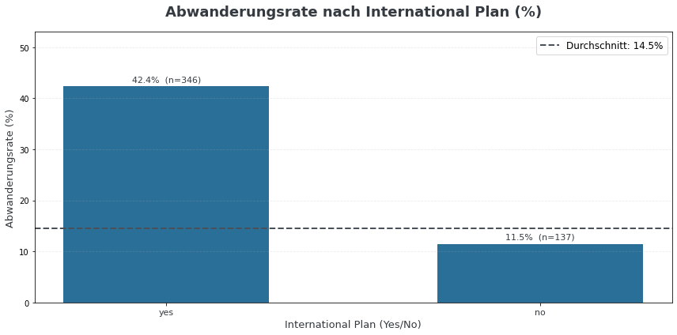
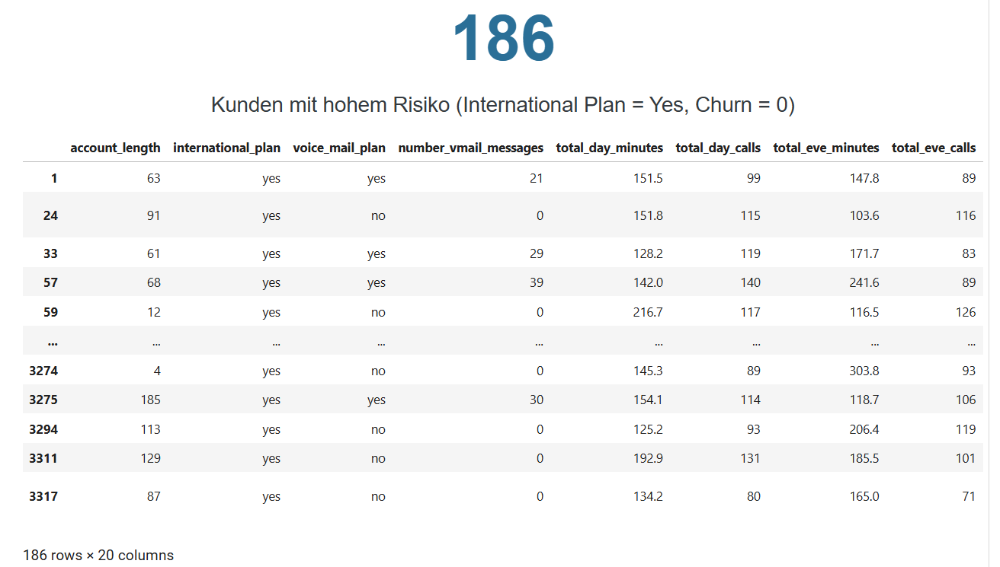
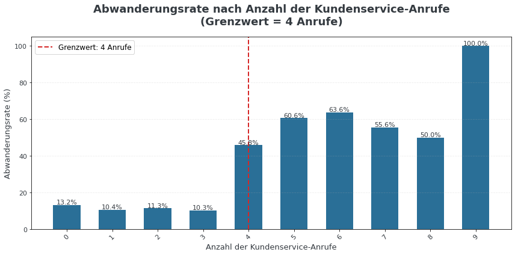
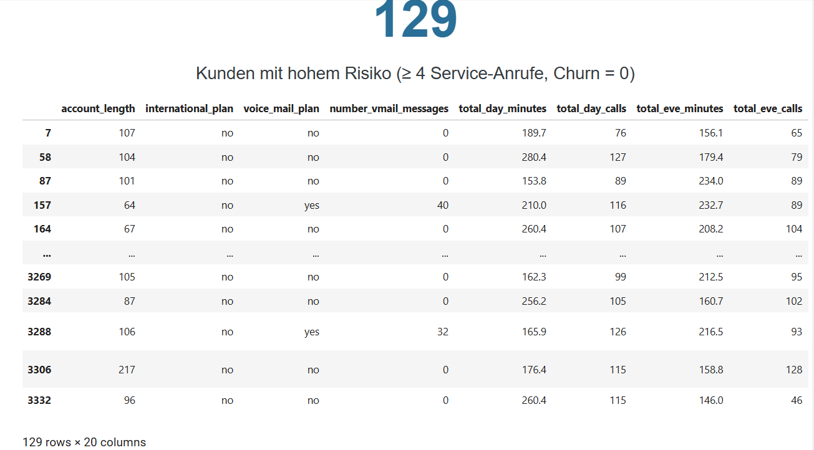
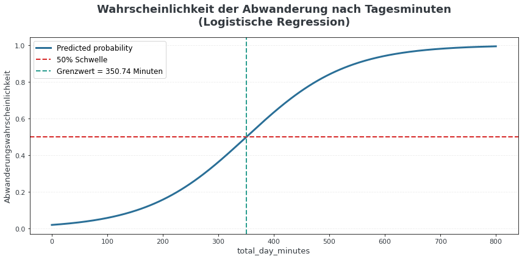
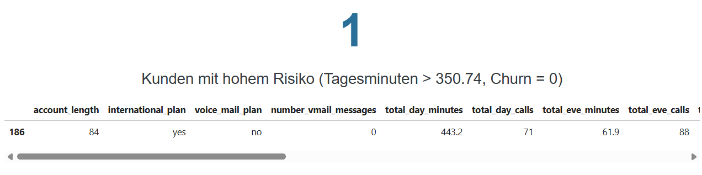

Kundenabwanderung bei Teleconfia
Teleconfia, ein Telekommunikationsanbieter, testet den Markteintritt in Florida — mit deutlicher Kundenabwanderung nach Ablauf der Einführungskonditionen. Ziel dieser Analyse: herausfinden, welche Stadtgebiete und welche individuellen Kunden am stärksten gefährdet sind, um zwei gezielte Marketingkampagnen zu ermöglichen.
Kontext & Fragestellung
Teleconfia bot neuen Kundinnen und Kunden ein Jahr lang vergünstigte Konditionen für die Nutzung des Netzes an. Nach Ablauf dieser Frist wanderten viele von ihnen ab (Churn). Um dem entgegenzuwirken, sollten zwei Marketingkampagnen entwickelt werden: eine Plakatkampagne für besonders betroffene Stadtgebiete und eine individuelle Kontaktaufnahme mit Kundinnen und Kunden, die wahrscheinlich abwandern.
Konkret sollten folgende Fragen beantwortet werden:
- Welche vier Stadtgebiete weisen die höchste Kundenabwanderung auf?
- Welche kategorische Datenreihe eignet sich, um individuell gefährdete Kunden zu identifizieren?
- Welche ganzzahlige Datenreihe eignet sich dafür, und wo liegt ein sinnvoller Grenzwert?
- Welche Fließkomma-Datenreihe ergänzt diese Auswahl — bestimmt über eine logistische Regression?
- Wie lassen sich die Ergebnisse visualisieren und in konkrete Empfehlungen übersetzen?
Vorgehen
Die Kundendaten wurden über eine SQLite-Datenbank eingelesen — verbunden mit Python über SQLAlchemy, sodass SQL-Abfragen direkt in den Analyseworkflow eingebunden werden konnten. Nach der Prüfung und Bereinigung der Daten folgte die explorative Analyse je Stadtgebiet, gefolgt von der Untersuchung dreier möglicher Risikosignale auf individueller Kundenebene: eine kategorische Variable, eine ganzzahlige Variable mit einem naheliegenden Grenzwert, und eine Fließkomma-Variable, deren Grenzwert über eine logistische Regression bestimmt wurde. Jeder Schritt wurde visualisiert, um die Empfehlungen nachvollziehbar zu machen.
1. Stadtgebiete mit höchster Abwanderung
Der Gesamtdurchschnitt der Abwanderungsrate liegt bei 14,5 %. Vier Stadtgebiete liegen deutlich darüber und wurden für die Plakatkampagne priorisiert: Jacksonville (29,8 %), Orlando1 (23,7 %), Cape Coral (21,8 %) und Orlando2 (19,1 %).

2. Kategorisches Risikosignal: International Plan
Kundinnen und Kunden mit aktivem International Plan wandern deutlich häufiger ab: 42,4 % gegenüber 11,5 % ohne den Plan — ein klarer Risikofaktor, mutmaßlich durch Preis-Leistungs-Wahrnehmung oder Kostentransparenz bedingt.

Diese Gruppe wird für die individuelle Kampagne priorisiert — z. B. mit proaktiver Tarifberatung oder Sonderkonditionen.

3. Ganzzahliges Risikosignal: Kundenservice-Anrufe
Bis zu drei Anrufen bleibt die Abwanderungsrate im Bereich von 10–13 %. Ab vier Anrufen steigt sie sprunghaft an — bis auf 100 % bei neun Anrufen. Die Anzahl der Service-Anrufe ist damit ein starkes Frühwarnsignal für Unzufriedenheit.

Diese Kunden gelten als „akut gefährdet" und sollten prioritär kontaktiert werden — Fokus: Problemlösung und individuelle Angebote.

4. Fließkomma-Signal: Logistische Regression
Um das dritte Kriterium datenbasiert zu bestimmen, wurde eine logistische Regression auf total_day_minutes angewendet. Die S-Kurve zeigt: ab 350,74 Tagesminuten liegt die vorhergesagte Abwanderungswahrscheinlichkeit über 50 %. Dieser Grenzwert kann zukünftig genutzt werden, um Heavy-User frühzeitig zu markieren.

Ein einzelner Heavy-User mit hohem Risiko — dieser Grenzwert eignet sich vor allem als Frühwarnsystem für zukünftige Kunden mit ähnlichem Nutzungsprofil.

Empfehlungen
Limitationen
- Die Daten decken nur ein Jahr und ausschließlich das Pilotgebiet Florida ab.
- Preis-, Wettbewerbs- und Netzqualitätsdaten lagen nicht vor.
- Die logistische Regression basiert auf einem einzelnen Prädiktor; ein Modell mit mehreren Variablen könnte zusätzliche Einsichten liefern.
- Korrelation bedeutet keine Kausalität — die identifizierten Signale sind starke Indikatoren, nicht zwingend Ursachen der Abwanderung.
Den vollständigen Code — Datenbereinigung, Analyse und Regression — findest du im Repository.